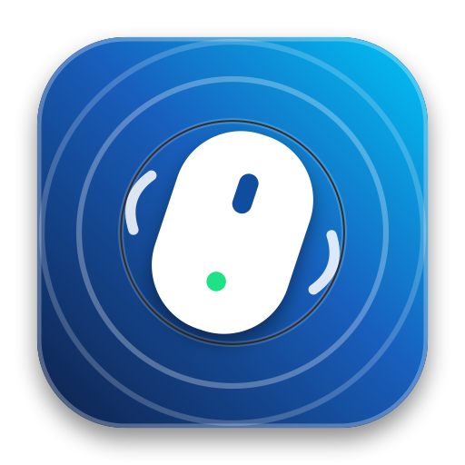
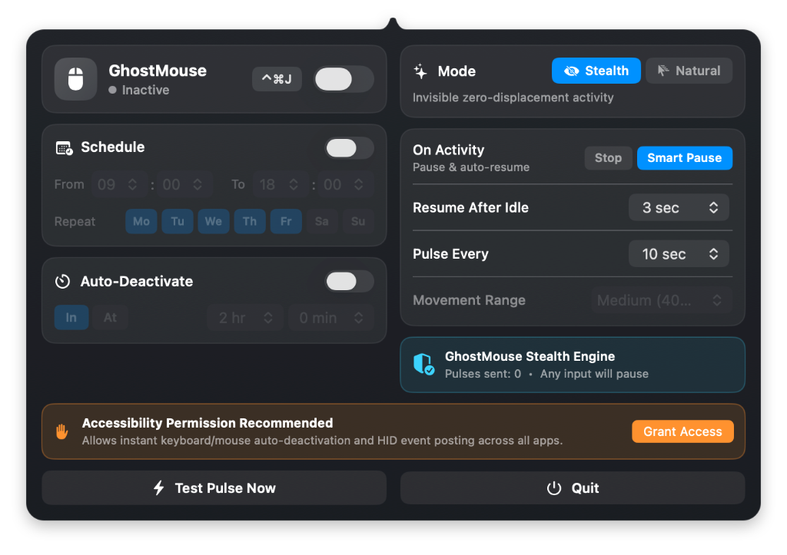

A native macOS menu bar mouse mover utility with true invisible Stealth mode, instant keyboard/mouse auto-deactivation, work schedules, and countdown timers — 100% free and open source.

Dispatches zero-displacement hardware HID pulses (+1/-1 delta at the exact same pixel). Your cursor never visibly moves, while macOS, Slack, and Microsoft Teams stay active.
Choose between Stop (turns off the instant you move your physical mouse or press a key) or Smart Pause (pauses on input and auto-resumes after idle).
Restrict activity to your working hours (e.g. 09:00–18:00 Mon–Fri) or set an Auto-Deactivate countdown timer so it turns off automatically at the end of the day.